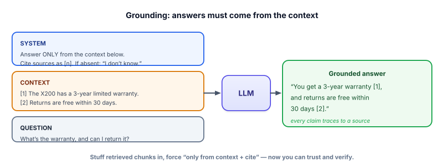

Grounding & citations
Retrieval found the right text. Now make the model actually use it, cite it, and admit when the answer isn’t there. This is where RAG converts retrieved chunks into a trustworthy, verifiable answer — and where a sloppy prompt can throw away all your retrieval work.
Retrieval isn’t enough on its own
You can retrieve perfect chunks and still get a hallucinated answer if the prompt lets the model fall back on its memory. Grounding is the discipline of forcing the answer to come only from the supplied context — and to say so when the context doesn’t contain it. Done right, every claim the model makes can be traced to a source you can check. That traceability is the difference between “a chatbot said so” and “here’s the answer, and here’s the document it came from.”
Grounding means instructing the model to answer strictly from the provided context. Faithfulness is the property that the answer is actually supported by that context (no invented claims). Citations are references (like [1], [2]) tying each claim to the chunk it came from. Abstention is the model saying “I don’t know” or “not in the provided documents” when the answer isn’t present — a feature, not a failure.

[n], abstain if absent.” Now every sentence is checkable.The grounded-prompt recipe
- Number the chunks in the context block (
[1],[2], …) and keep their sources alongside. - Instruct strictly: “Answer using only the context. Cite the chunk number(s) for each claim. If the answer isn’t in the context, say you don’t know.”
- Put the question last (recency helps; Track 1.4).
- Verify the citations programmatically — don’t just trust that
[2]really supports the claim.
Grounded vs. ungrounded
Same question, same model. The only difference is whether retrieved sources are supplied and the model is told to use only them.
Build the grounded prompt, then check that what the model cited actually exists. Verification is what makes citations trustworthy rather than decorative.
import ollama, re
def grounded_answer(question, chunks):
# chunks: list of {"text":..., "source":...}
context = "\n".join(f"[{i+1}] {c['text']}" for i, c in enumerate(chunks))
prompt = f"""Use ONLY the context to answer. After each claim, cite its number like [1].
If the answer is not in the context, reply exactly: "Not in the provided documents."
Context:
{context}
Question: {question}"""
ans = ollama.chat(model="llama3.2",
messages=[{"role": "user", "content": prompt}])["message"]["content"]
# VERIFY: every cited number must be a real chunk we supplied
cited = {int(n) for n in re.findall(r"\[(\d+)\]", ans)}
valid = all(1 <= n <= len(chunks) for n in cited)
sources = [chunks[n - 1]["source"] for n in sorted(cited) if 1 <= n <= len(chunks)]
return {"answer": ans, "citations_valid": valid, "sources": sources}
out = grounded_answer("How long is the warranty?",
[{"text": "The X200 has a 3-year limited warranty.", "source": "warranty.md"}])
print(out) # answer "...3-year... [1]", citations_valid=True, sources=["warranty.md"]For stricter systems, go further: check that the cited chunk’s text actually supports the claim (string overlap, or an LLM-as-judge faithfulness check from Track 6). A citation that points at an unrelated chunk is worse than none.
- Retrieval supplies evidence; grounding forces the model to use only that evidence and abstain otherwise.
- Recipe: number the chunks, instruct “only from context + cite [n] + say I don’t know,” put the question last.
- Abstention is a feature — “not in the documents” beats a confident hallucination.
- Verify citations programmatically; don’t assume a cited chunk actually supports the claim.
- Citations turn answers from “trust me” into “here’s the source” — the core of trustworthy RAG.
Your grounded RAG bot is asked something genuinely not covered by any retrieved chunk. What’s the desired behavior, and how do you get it?
1. Write the system instruction for a grounded medical-info assistant that must cite sources and never guess. What clauses are non-negotiable?
2. Two retrieved chunks disagree (one says 30-day returns, one says 14-day). How should a good grounded prompt handle this?
3. Your bot cites [3] but chunk 3 doesn’t actually contain the claim. What kind of failure is this, and how do you catch it?
▸ Show solutions & reasoning
1. Non-negotiable clauses: “Answer only from the provided context”; “cite the source for every claim”; “if the answer is not in the context, say so and do not guess”; and for this domain, “do not provide medical advice beyond the cited sources; recommend consulting a professional.” The combination of only-from-context + cite + abstain is what makes it safe and verifiable.
2. The prompt should instruct the model to surface the conflict rather than silently pick one: “If sources disagree, report both and cite each.” A good grounded answer might be “Source [1] says 30 days; source [2] says 14 days — please verify which applies.” Hiding the disagreement would present a false certainty; exposing it (with citations) lets a human resolve it.
3. This is a faithfulness failure (a mis-citation / unsupported claim) — the answer looks grounded but the citation doesn’t back it. Catch it with verification: check that the cited chunk’s text actually supports the claim, via string/keyword overlap or an LLM-as-judge faithfulness check (Track 6). Citation format validity isn’t enough; you must verify the citation’s content truly supports what was said.
“Grounded” isn’t a vibe — it’s something you can score. The key metric is faithfulness (also called groundedness): the fraction of claims in the answer that are actually supported by the retrieved context. You estimate it by decomposing the answer into individual claims and checking each against the cited chunks — increasingly with an LLM-as-judge (Track 6) that reads claim + source and returns supported / unsupported. A separate metric, answer relevance, asks whether the answer actually addresses the question (a faithful answer can still be off-topic). Strong RAG teams track both on every release.
Why this matters: grounding reduces hallucination dramatically but doesn’t eliminate it. Models can still paraphrase a source into something subtly wrong, blend two chunks into a claim neither makes, or cite the right chunk for the wrong sentence. So the production posture is layered: ground hard in the prompt, verify citations exist, measure faithfulness, and for high-stakes use surface the sources to the user so they can check. You’re not asking the model to be trustworthy — you’re building a system where its claims are checkable, which is a far stronger guarantee. That checkability, more than any single prompt trick, is what makes RAG safe to ship.
You can now build a RAG system that retrieves, grounds, and cites. The last question — the one that separates demos from products — is: how do you know it’s actually any good? Next: evaluating retrieval quality.